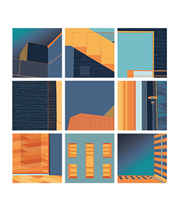

Science Squared

Given the task to create a nine-square composition, with the use of photography, illustration, and color selection, Elise presented Women in STEMd. She took photos of the Harney Science building on the USFCA’s campus and composted her photos into this. After she made the composition, she streamlined it in Adobe Illustrator. The humorous name comes from an inside joke Elise has about being a design major. She felt left out by not majoring in Science, Technology, Engineering, or Math, so she decided to tag along the “d” for Design. Components: Photography and Illustrator